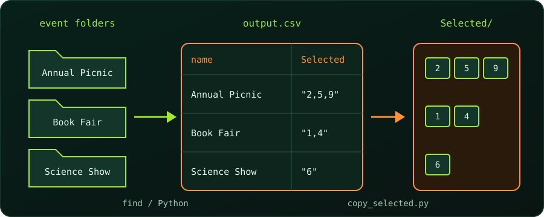

The job
I had many folders, one per event, with numbered files inside (1.pdf, 2.jpg, 3.docx, …). From each folder I needed only a few of them, collected in one place, still grouped by event.
By hand, that meant opening a folder, finding the files, copying them, making a matching folder at the destination, pasting, and starting over with the next one. It is slow, and it is easy to miss a file.
The Linux command line offered a shorter way: list the folders, write down which files I want, and let a script do the copying. I did not have to write the code alone: Claude and Gemini helped me with it at every step.
The folder names and numbers below are sample data that show each step.
Step 1: I listed the folders
I did not want to type the folder names, so I let find, sort and awk write them into a CSV file. I ran this in the folder that holds all the others:
find . -mindepth 1 -maxdepth 1 ! -name output.csv \
-printf '%f\t%y\t%s\t%TY-%Tm-%Td %TH:%TM:%TS\n' |
sort -f |
awk -F'\t' '
BEGIN { OFS = ","; print "name,type,size_bytes,modified" }
{
gsub(/"/, "\"\"", $1) # double any quotes in the name
type = $2
if ($2 == "d") type = "dir"
if ($2 == "f") type = "file"
if ($2 == "l") type = "link"
print "\"" $1 "\"", type, $3, substr($4, 1, 19)
}' > output.csvFor a sample with five event folders, a text file and a symbolic link, output.csv looks like this:
name,type,size_bytes,modified
"Annual Picnic",dir,4096,2026-11-26 20:54:55
"Book Fair",dir,4096,2026-11-26 20:54:55
"fair-link",link,9,2026-11-26 20:54:55
"Farewell",dir,4096,2026-11-26 20:54:55
"notes ""draft"".txt",file,6,2026-11-26 20:54:55
"Science Show",dir,4096,2026-11-26 20:54:55
"Sports (Indoor, Outdoor)",dir,4096,2026-11-26 20:54:55Each tool does one small job, and the pipe (|) passes the result to the next:
findlists what is directly inside the current folder (-mindepth 1 -maxdepth 1), leaving out the output file itself (! -name output.csv).-printfwrites the name (%f), type (%y), size in bytes (%s) and modification time, separated by tabs.sort -fsorts by name, ignoring case.awkturns the lines into CSV. It quotes each name, so commas and quotes inside it stay in one column, andsubstr()cuts off the fraction thatfindadds to the seconds.
Step 2: I marked the files I wanted
I opened output.csv in a spreadsheet, kept the folder rows, and added a Selected column with the numbers of the files I wanted. Only the name and Selected columns matter from here on, so the others can go:
name,Selected
Annual Picnic,"2,5,9"
Book Fair,"1,4"
"Sports (Indoor, Outdoor)","03,12"
Science Show,"6,71"
Farewell,Format the Selected column as text before typing in it. Otherwise the spreadsheet may turn an entry such as 2,5 into a number.
This was the only manual part, and it is the part that needs a human: deciding what to keep.
Step 3: A script did the copying
I saved this script as copy_selected.py next to output.csv:
import csv
import shutil
from pathlib import Path
with open("output.csv", newline="", encoding="utf-8-sig") as f:
rows = list(csv.DictReader(f))
copied = 0
for row in rows:
folder = Path(row["name"])
numbers = [n.strip() for n in (row["Selected"] or "").split(",") if n.strip()]
if not numbers:
print(f"Skipped (nothing selected): {folder}")
continue
if not folder.is_dir():
print(f"Folder not found: {folder}")
continue
# Map each number to its files, whatever the extension
items = {}
for p in folder.iterdir():
if p.is_file() and p.stem.isdecimal():
items.setdefault(int(p.stem), []).append(p)
for n in numbers:
matches = items.get(int(n), []) if n.isdecimal() else []
if len(matches) != 1:
print(f"Check {folder}: '{n}' matches {len(matches)} files")
continue
target = Path("Selected") / folder.name / matches[0].name
target.parent.mkdir(parents=True, exist_ok=True)
if not target.exists():
shutil.copy2(matches[0], target) # copy2 keeps timestamps
copied += 1
print(f"Copied {copied} files")Then I ran it from the same folder:
python3 copy_selected.pyThe result
In the sample, the folders hold 10, 6, 15, 8 and 5 files respectively (in the order of the CSV rows). The script reports:
Check Science Show: '71' matches 0 files
Skipped (nothing selected): Farewell
Copied 8 filesAnd here is what it builds:
Selected/
├── Annual Picnic/
│ ├── 2.jpg
│ ├── 5.jpg
│ └── 9.pdf
├── Book Fair/
│ ├── 1.pdf
│ └── 4.docx
├── Science Show/
│ └── 6.mp4
└── Sports (Indoor, Outdoor)/
├── 3.csv
└── 12.jpgThe first message is worth having. There is no file 71 in Science Show (probably a typo), and the script says so instead of silently skipping it. I can correct the CSV and run the script again: files already in Selected are not copied twice.
Why it was so easy
- The computer typed the folder names, so I only typed the numbers.
- The originals are copied, not moved, so nothing is lost if a number is wrong.
03and3refer to the same file.utf-8-sighandles the hidden byte order mark that some spreadsheet programs add to CSV files.- The same steps work again for the next batch of folders.
That is what makes the command line great: a few small tools and a short script turn a repetitive chore into a quick job.
No GNU find? Use Python for step 1
-printf belongs to GNU find, found on most Linux distributions. The find on macOS and BSD does not have it. The awk command also breaks on names containing a tab or a line break. In these cases, Python can make the list. We save this as list_csv.py:
import csv
import os
from datetime import datetime
with open("output.csv", "w", newline="", encoding="utf-8") as f:
writer = csv.writer(f)
writer.writerow(["name", "type", "size_bytes", "modified"])
for entry in sorted(os.scandir("."), key=lambda e: e.name.lower()):
if entry.name == "output.csv":
continue
if entry.is_symlink():
kind = "link"
elif entry.is_dir():
kind = "dir"
elif entry.is_file():
kind = "file"
else:
kind = "other"
info = entry.stat(follow_symlinks=False)
modified = datetime.fromtimestamp(info.st_mtime)
writer.writerow([entry.name, kind, info.st_size,
modified.strftime("%Y-%m-%d %H:%M:%S")])Then we run it in the folder we want to list (if the script sits there too, it appears in the list):
python3 list_csv.pyThe result has the same columns. The only visible difference is that Python adds quotes only where a value needs them.